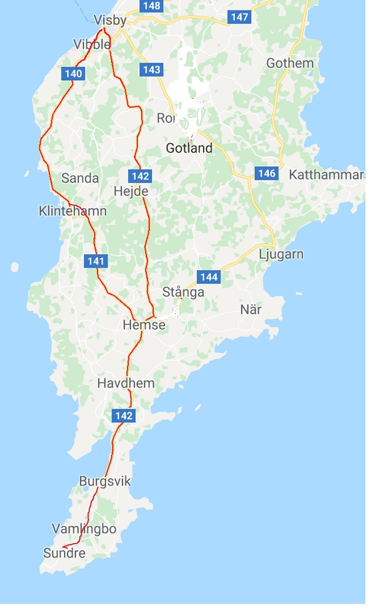
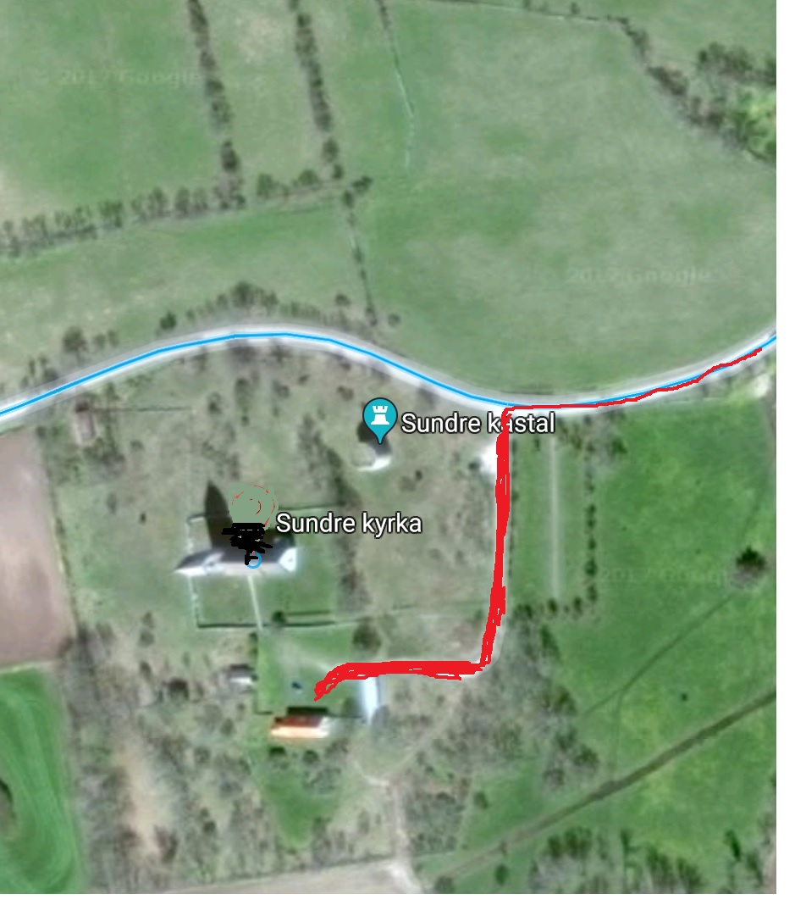

<div>
    Sundre skola ligger i Gotlands sydligaste socken, Sundre. Det är ca 90km från Visby. Med bil kör man antingen via Klintehamn(141)
    eller via Hemse(142) till Burgsvik. Därifrån är det ytterligare ca 12km söderut. Strax innan Sundre kastal och kyrka
    går det en väg till vänster upp mot skolan (och kyrkan). Du är framme. Om du åker buss kliver du av i Burgsvik(utom på
    vissa linjer sommartid som går till Vamlingbo). Men det är fortfarande ca 4km till skolan från Vamlingbo
    <br>
    
</div>